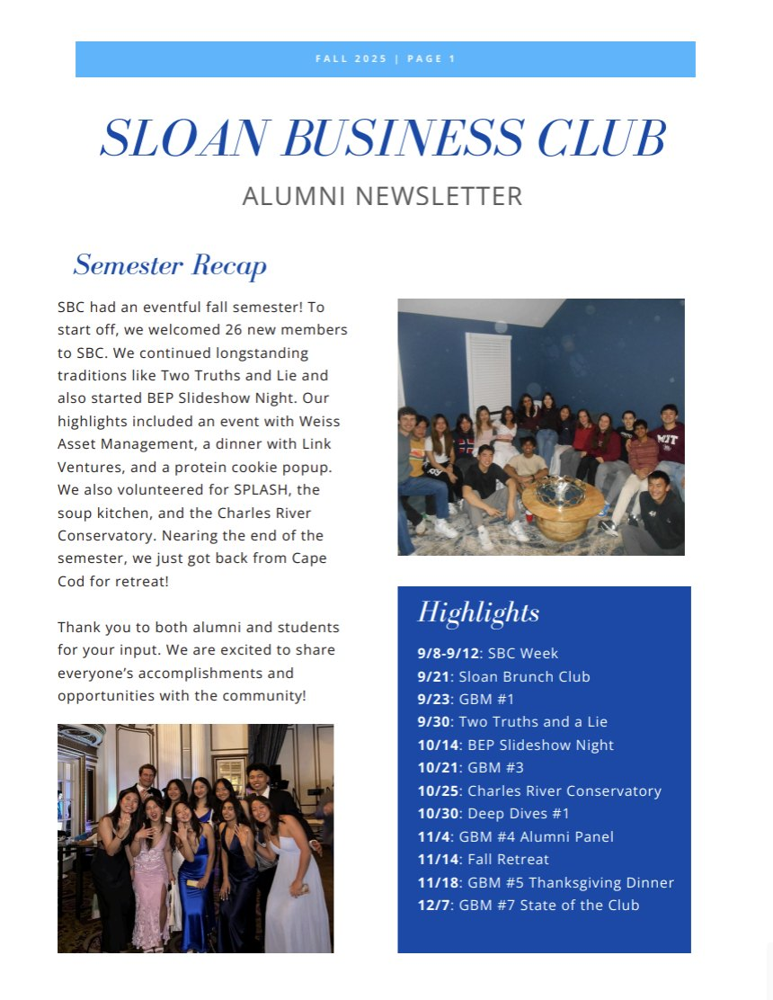
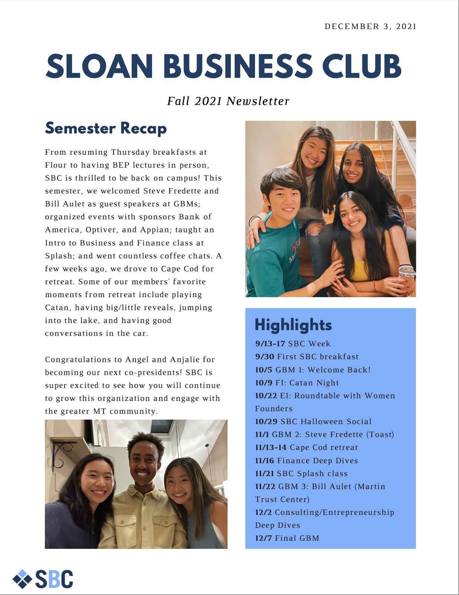
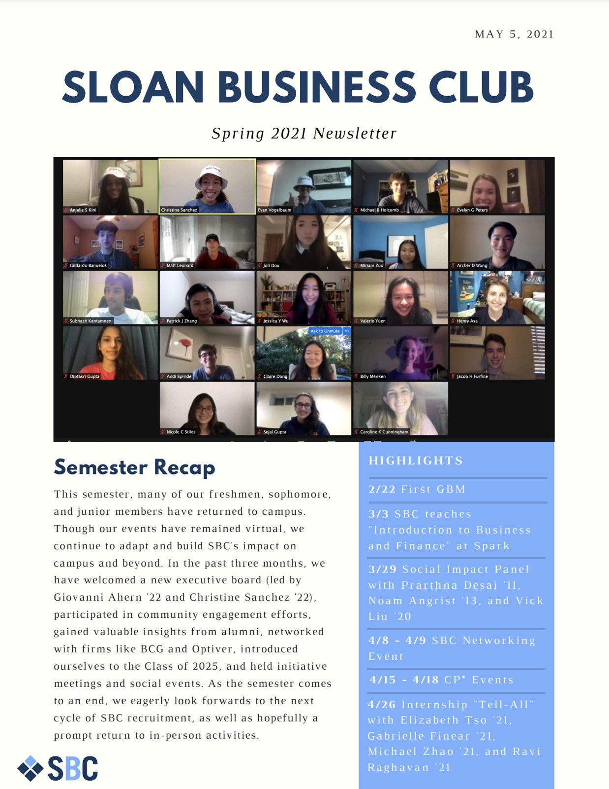
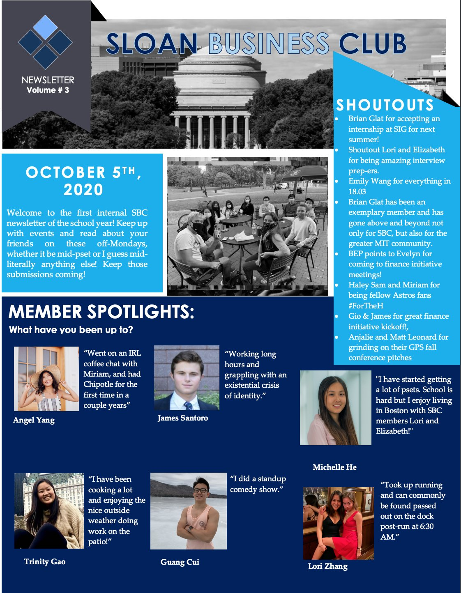
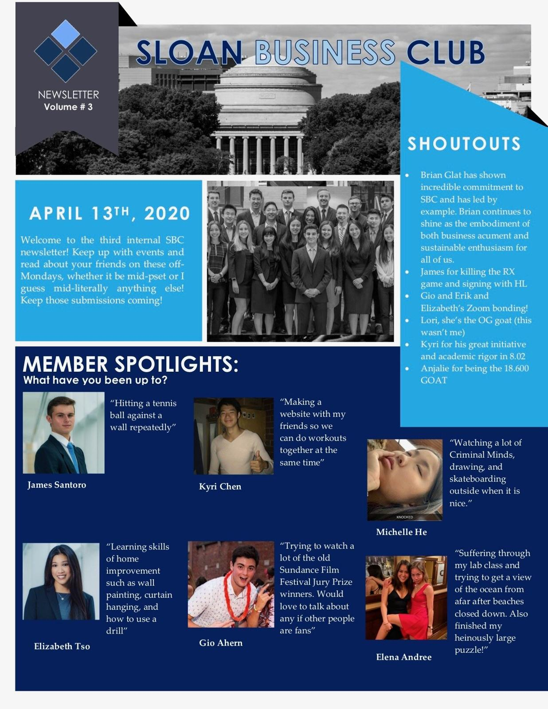
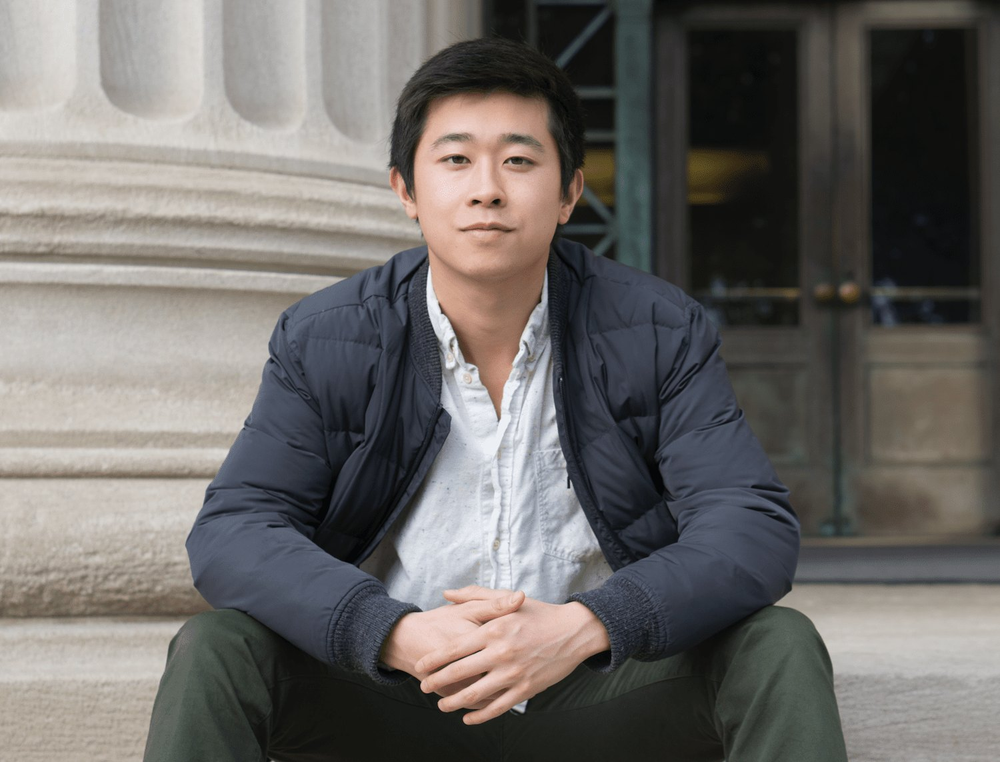
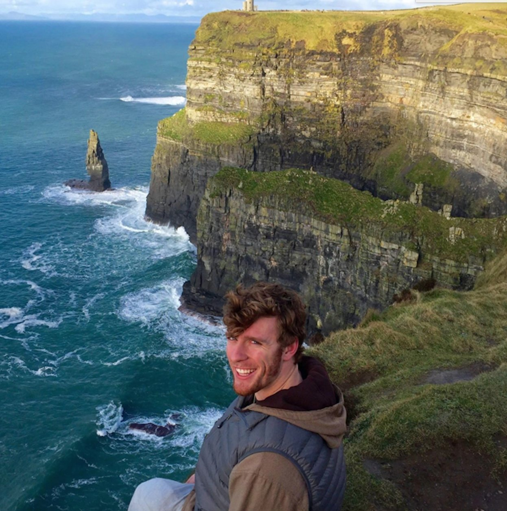

Newsletters, interviews, and perspectives.
Semester newsletters, conversations with alumni, and essays from members of the club.

December 2025 Newsletter
A look back at the fall 2025 semester.
Read
December 2021 Newsletter
Fall 2021 in review.
Read
May 2021 Newsletter
Spring 2021 in review.
Read
October 2020 Newsletter
Fall 2020 updates from the club.
Read
April 2020 Newsletter
Spring 2020 updates from the club.
Read
Meet Tyson, Former Managing Director of Consulting
On starting the consulting initiative with Square Peg Capital, a favorite retreat, and why consulting after MIT.
Read
Meet Anthony, Former Managing Director of Entrepreneurship
On launching the Entrepreneurship group, the Flux Accelerator, and moving from engineering to product.
ReadMeet Hyun, Former Co-President
On growing into leadership roles, 14.26 with Bengt Holmstrom, and choosing investment banking.
ReadMeet Jessica, Former Co-President
On BEP, the annual retreat, and the Art and Science of Negotiation.
ReadSBC Alumni Interview Series
For each day of SBC Week, an interview with a recent SBC graduate.
ReadIt’s OK to Major in Course 15
A graduating senior on the stigma of studying management at MIT, and why he stopped chasing validation.
ReadInterview with Philippe Schwartz of Square Peg Capital
A venture capitalist on collaborative investing, the Boston ecosystem, and advice for MIT founders.
Read